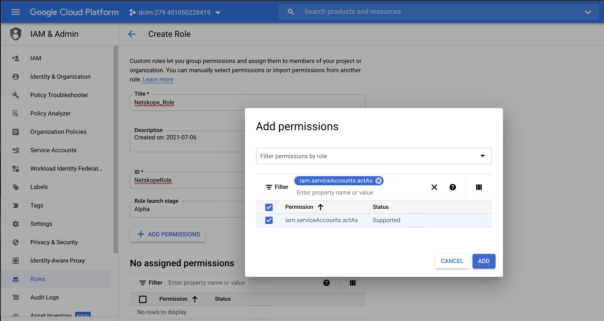

Configure Google Cloud Storage as a Forensic Destination
Netskope provides forensics capabilities to scan your Organizations, Folders, and Projects for DLP violations. You can configure Google Cloud Storage in your organization, folder, or project as the destination to store objects that have been found to be in violation.
To configure a Google Cloud Storage as a forensic destination, follow these steps.
Step 1: Assign permissions
In your Google console, navigate to organization, folder, or project which contains the storage bucket to be configured as a forensic destination.
Log into Google Cloud console and go to IAM & Admin.
Select the organization, folder, or project resource with the storage bucket to be configured as a forensic destination.
In the left navigation panel, click Roles and click Create Role.
Provide a role title and click Add Permissions. Provide the following permissions.
storage.buckets.list storage.objects.create storage.objects.get
Enter each permission in the Enter property name or value text box. Select the permission and click Add.
After adding the permissions, click Create to create the custom role.
Step 2: Create a service account
Create a service account for the organization, folder, or project and download the private key. This key will be required when setting up the instance in your Netskope tenant.
In the left navigation panel if the Google Cloud console, click Service Accounts > Create Service Account
Provide a name for the service account and click Create and Continue. Click Continue without granting access or permissions. Then click Done without granting user access to the service account.
On the Service accounts page, click the service account you created and select on the Keys tab.
Click Add Key and from the drop-down list click Create new key.
In the Create private key for <service account> dialog box, select the key type as JSON and click Create. The private key is downloaded to your computer.
Click Close.
Step 3: Setup the Google instance in your Netskope tenant
Set up the Google organization, folder, or project instance for forensic in your Netskope tenant using the credentials of the service account to which the custom role is attached.
Log in to the Netskope tenant UI and navigate to Settings > API Data Protection > IaaS.
Click the Google Cloud Platform icon and then click SETUP.
The New Setup window opens.
Under the GCP Service Account section, enter the following details:
Instance Name: Enter a name for the Google Cloud Platform instance.
Admin Email: Enter the email address of the Google Cloud Platform account owner.
Note
You can enter any email address here. Netskope sends notifications to this email address.
Connection Type: Select Forensic.
Note
Few of the instance type options may be disabled. Contact your Netskope sales representative for additional information.
In the Cloud Provider Information section, enter the following details:
Under the Upload section, click SELECT FILE and upload the private key JSON file that you downloaded in Step 2: Create a service account.
Click SAVE.
On the API Data Protection > IaaS page, click the Google Cloud Platform icon.
Click Grant Access beside the newly created instance.
Refresh your browser, and you will see a green check icon next to the Google Cloud Platform instance name.
Create a Forensic Profile
You can now create a Forensic Profile to receive forensic data. In the Netskope UI, go to Policies > Forensic and specify the Google instance name and storage bucket name. To learn more: Create a Forensic Profile.
When the profile is created, Netskope creates a README.txt file in the storage bucket to verify the destination.
You can view alerts under Incidents > DLP.